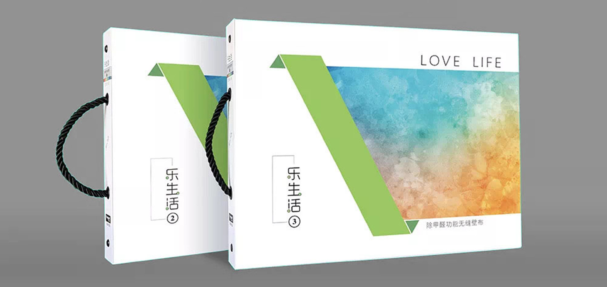
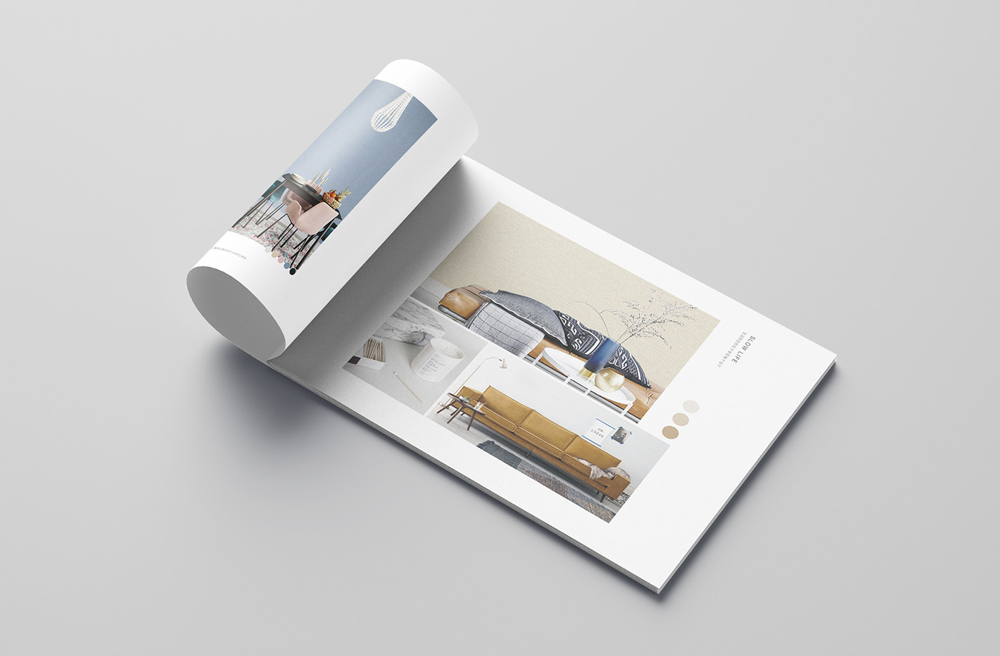
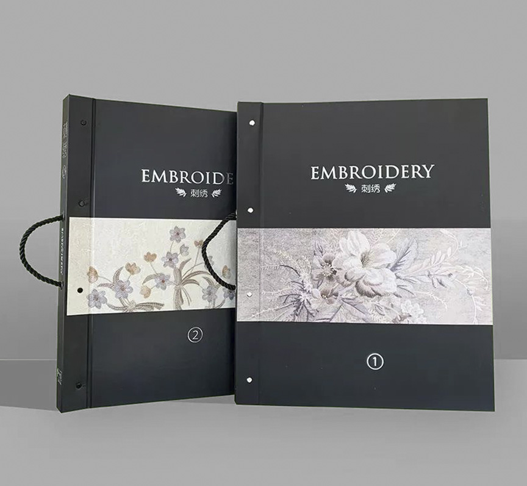
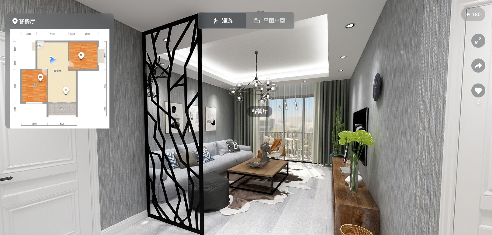
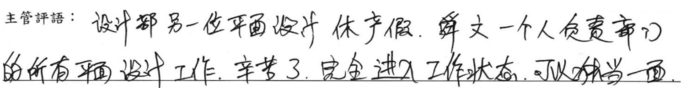

在上海歐雅工作時主要職責是定期出版產品型錄。根據不同產品類型，我們製作多樣風格的型錄。我主要負責封面與內頁的排版設計，以及部分產品效果圖的製作。設計風格以簡潔俐落為主。除了版面設計，還需選擇合適的室內裝潢素材來襯托產品，確保整體視覺效果和諧統一。
慢生活14-19、樂生活1-2、多彩生活2-3、除甲醛小冊、工程壁布、艾瑪版本
在確定收錄的產品內容後，以產品的類型去定調版本的風格，選圖做圖上會依據定好的風格去製作，例如本次定調為北歐風，便會選擇一些簡約的木質家具等作為配飾，家具色調要與產品能做搭配
找尋大量圖片素材後，經過精修後，再做篩選，最終會配圖在前導頁面和產品內頁，並進行設計排版，部分的產品需要進行棚拍，會在公司內部的攝影棚拍攝，除了圖片的展示外，我們還提供了客戶線上VR情境的展示，透過線上平台製作3D擬真的家居空間來展示我們的產品，使客戶能更了解我們的產品用途。
雖然我以實習生的身份進入公司，但由於學校的實習規範較為特殊，我們在大三整個學年都在實習，而不是一般的一兩個月，因此能接觸到完整的工作流程。在實習半年後，由於部門另一位負責平面設計的同事請產假，我接手了所有後期的平面設計工作。隨著工作量的增加，有時需要加班趕工，但我的個人KPI因此能夠超過標準，得到了主管的認可。我非常感謝這次海外實習的機會，讓我得以脫離舒適圈，開闊視野並提升自己。
